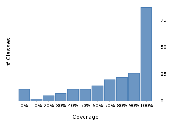
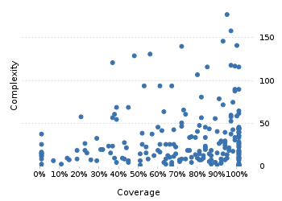

Project overview
Code coverage 243 classes, 17,039 / 22,362 elements
0.7619622376.2%
Test results 2,997 / 2,997 tests 5.44 secs
1.0100%
Code metrics
5,152
13,301
3,909
243
167
8
70,810
28,752
7,254
0.55
3.4
16.09
30.38
1.86
Class Coverage Distribution

Class Complexity

Coverage tree map
Generating Coverage Tree Map. Please wait...

Top 20 project risks
DateTimeFieldType.StandardDateTimeFieldType
DateTimeFormatterBuilder.MatchingParser
Partial
DurationFieldType.StandardDurationFieldType
PeriodType
DateTimeFormatterBuilder.NumberFormatter
DateTimeZone
BaseSingleFieldPeriod
DateTimeFormatterBuilder.Composite
DateTimeZoneBuilder
DateTimeZoneBuilder.OfYear
DateTimeZoneBuilder.PrecalculatedZone
BasePeriod
DateTimeZoneBuilder.RuleSet
ZoneInfoCompiler
ZoneInfoCompiler.DateTimeOfYear
PeriodFormatterBuilder.SimpleAffix
StringConverter
PeriodFormatterBuilder.IgnorableAffix
DateTimeFormatterBuilder.TimeZoneOffset
Most complex packages
| 1. | 0.966541796.7% |
org.joda.time 2498 |
| 2. | 0.540535354.1% |
org.joda.time.format 1625 |
| 3. | 0.68828768.8% |
org.joda.time.chrono 1288 |
| 4. | 0.5969959.7% |
org.joda.time.field 670 |
| 5. | 0.8231357382.3% |
org.joda.time.tz 582 |
Most complex classes
| 1. | 0.946257294.6% |
LocalDateTime 179 |
| 2. | 0.9690721696.9% |
LocalDate 160 |
| 3. | 0.9236790592.4% |
DateTimeZone 148 |
| 4. | 0.994666799.5% |
DateTime 143 |
| 5. | 0.7168141671.7% |
PeriodFormatterBuilder.FieldFormatter 142 |